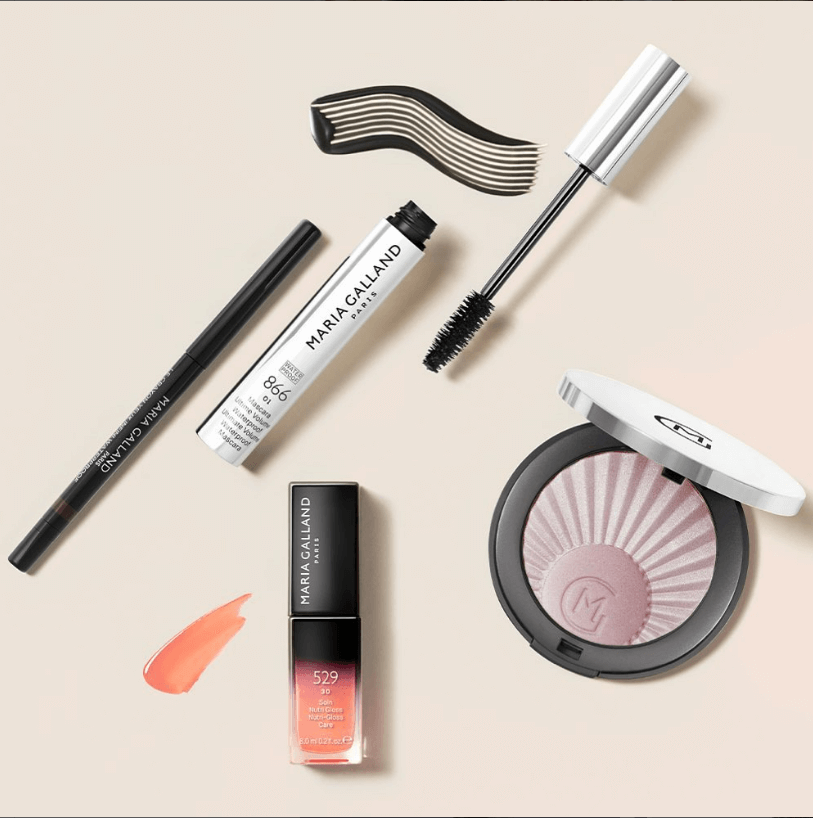
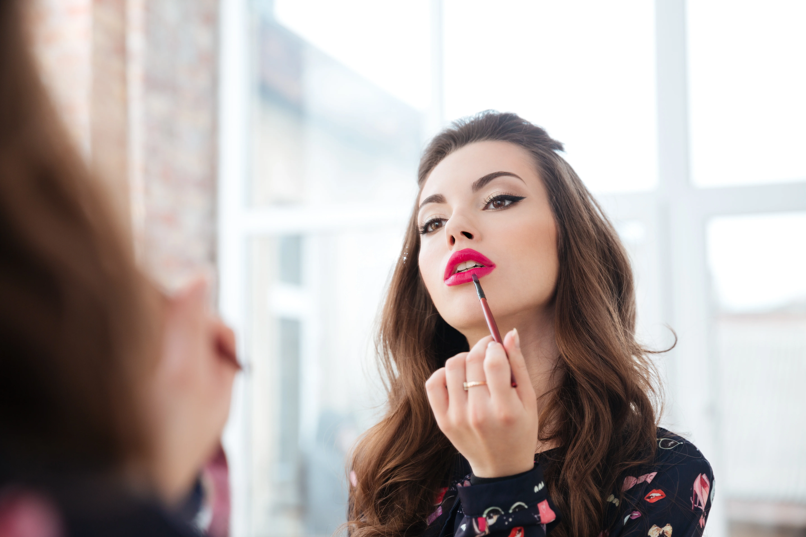
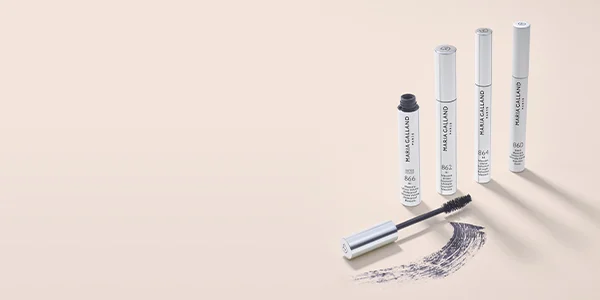
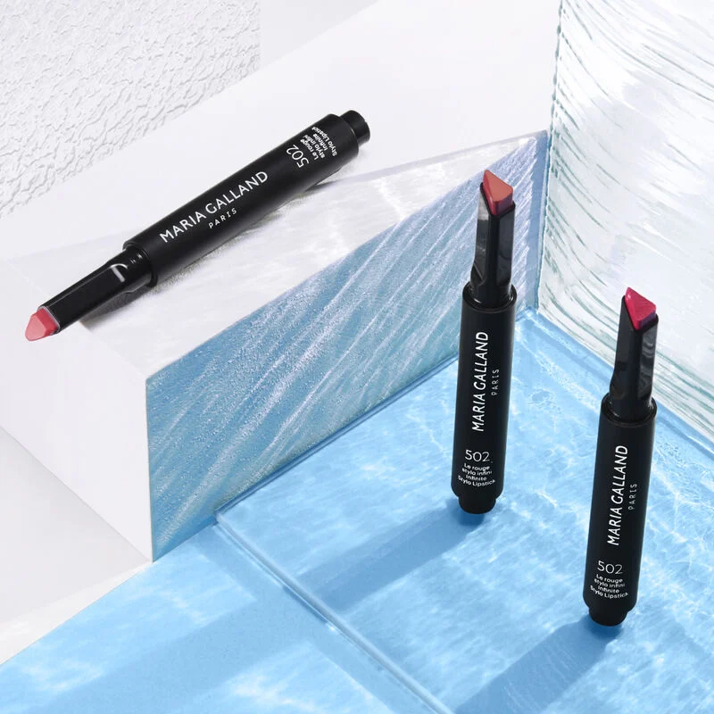

Декоративная косметика – что это? Советы по выбору и использованию

Для каждой девушки важно выглядеть стильно, ощущать свою привлекательность. Это основа уверенности в себе, в своей красоте, ухоженности и неотразимости. Чтобы образ в целом получился гармоничным, нужно удачно скомбинировать одежду с прической и макияжем.
Современная бьюти-индустрия предлагает массу декоративных средств, которые способны творить «чудеса»: скрывать несовершенства кожи, подчеркивать или визуально менять форму глаз, губ, выделять скулы.
В дневном мейкапе можно обойтись тоном, тушью для ресниц и блеском. Если нужно выглядеть на все 100% на корпоративной вечеринке, используйте более смелые оттенки теней, губной помады. В деловом образе уместна лаконичность. Безупречный тон с акцентом на глаза или губы поможет создать нужное впечатление.
Все что нужно для эффектного мейка вы найдете на страницах каталога TOTIS Pharma. В наличии качественная профессиональная косметика для макияжа проверенных европейских и американских марок, которую используют своей работе опытные стилисты.

Что такое декоративная косметика
Декоративная косметика – это отдельная категория бьюти-продукции. Такие средства призваны улучшить внешний вид, опираясь на веяния моды и личные вкусовые предпочтения. При правильном нанесении средства могут подчеркнуть достоинства внешности и скрыть недочеты.
Мейкап может выполнять разные функции:
подчеркивать естественную красоту;
визуально корректировать недостатки кожи, черты лица, посадку и разрез глаз;
скрывать возраст, делая образ моложе и свежее.
Преимущества профессиональной декоративной косметики
Профессиональная косметика в отличие от продукции масс-маркет, имеет ряд преимуществ:
Качество и стойкость. Средства разрабатываются с применением инновационных технологий с использованием качественных ингредиентов. Поэтому макияж держится дольше и при этом смотрится натуральнее.
Насыщенность пигментов. Профессиональная продукция отличается более яркими цветами, с ее помощью проще выполнить эффектный макияж.
Безопасность и уход. Формулы бьюти-средств отличаются безопасностью, они не содержат веществ, которые могут быть потенциально опасными для здоровья. Часто профессиональная декоративная косметика обладает ухаживающими свойствами.
Профессиональные средства разрабатываются для стилистов, но могут применяться в домашних условиях.
Как подобрать косметику для макияжа
При выборе косметики нужно учитывать следующие моменты:
Определите цель и назначение макияжа. Решите, на чем вы хотите сделать акцент: на губах или на глазах. Это будет дневной, вечерний или тематический мейк?
Подбирайте оттенки декоративных средств с учетом цвета волос, кожи, радужки глаз. Для холодного цветотипа подойдет косметика с холодным подтоном: тени синего, фиолетового, серого цвета. Если внешний вид относится к теплому цветотипу, выбирайте золотистые, коричневые, песочные, бежевые оттенки теней.
При выборе карандашей для контура учитывайте цвет и форму глаз. Оптимальный вариант – оттенки, которые отличаются на 1-2 тона от естественного цвета.
Перед покупкой тона нужно учесть тип кожи, ее особенности, натуральный цвет.
При этом не бойтесь экспериментировать. Сегодня в моде неожиданные сочетания.

Как правильно пользоваться декоративной косметикой
Перед выполнением макияжа нужно тщательно очистить кожу, нанести увлажняющую сыворотку или легкий дневной крем. Если маскировка недостатков кожи не нужна, можно использовать легкий тональный крем или основу, ВВ-продукт.
Старайтесь использовать минимальное количество тона, чтобы не получить эффект маски. После каждого использования необходимо мыть спонжи, кисти и прочие бьюти-инструменты. Средства, у которых вышел срок годности, применять нельзя.
Виды косметики для ежедневного макияжа
У каждой девушки свой арсенал косметических средств. При этом базовый набор декоративной косметики примерно такой:
Тональный крем, корректор, консилер, база под макияж – это средства, которые предназначены для выравнивания тона, маскировки недостатков и подготовки кожи к нанесению декоративной косметики.
Румяна. Это средство придает лицу свежесть и скульптурность после выравнивания тона. С его помощью можно подчеркнуть скулы.
Пудра. Такая косметика помогает зафиксировать макияж и снять жирный блеск, обеспечивая матовый финиш.
Тени для век. Используются при выполнении макияжа глаз для придания выразительности.
Тушь – нужна для придания объема, длины и цвета ресницам.
Губная помада, блеск. Назначение таких средств – увлажнить кожу губ и придать желаемый оттенок.
Не будут лишними в косметичке следующие бьюти-средства:
Карандаш или подводка для глаз – с их помощью можно нарисовать стрелки, заполнить межресничное пространство, скорректировать форму и посадку глаз.
Карандаши, помада или тени для бровей – придают желаемую форму и цвет волоскам.
Хайлайтер – с его помощью можно подчеркнуть высокие точки лица и придать сияние коже.
Фиксатор макияжа – это бьюти-продукт в виде спрея, который помогает продлить стойкость мейка.
Кисти и аппликаторы – с помощью качественных инструментов наносить косметику проще, легче выполнять растушевку.
При выборе средств нужно опираться на свои предпочтения, особенности и недостатки кожи.
Краткий обзор продуктов для макияжа от Maria Galland Paris
В онлайн-каталоге TOTIS Pharma представлена профессиональная бьюти-продукция, которая идеально подходит для ежедневного мейка. Профессиональные стилисты рекомендуют подчеркнуть привлекательность и естественную красоту кожи именно средствами французского бренда Maria Galland Paris. Поскольку они не просто подчеркивают, но и содержат качественные ухаживающие природные комплексы, в том числе:
Увлажняющие ингредиенты
Гиалуроновая кислота/гиалуроновые микросферы - обеспечивают длительное и глубокое увлажнение + разглаживают морщины, улучшают упругость, эластичность и гладкость кожи.
Экстракт дрожжей - разглаживает морщины и оптимально увлажняет кожу.
Комплекс из экстракта красных морских водорослей "Energy Booster" - мгновенно и надолго увлажняет, минимизирует признаки усталости.
Экстракт коры магнолии - гидратирует кожу и придает упругость, устраняет покраснения.
Экстракт семян кунжута - предотвращает обезвоживание и смягчает кожу.
Масло марулы - увлажняет и питает кожу.
Питательные компоненты
Экстракт шиповника - обеспечивает необходимое питание, успокаивает кожу и дарит комфортные ощущения.
Масло ши и комплекс ценных растительных масел - придают коже мягкость и шелковистость, глубоко питают, предотвращают обезвоживание и шелушение.
Карнаубский воск и касторовое масло - бережно смягчают, насыщают липидами и питают кожу.
Антиоксиданты
Комплекс витаминов Е, С и А - помогает восстанавливать повреждения кожи, защищает от разрушительного воздействия свободных радикалов.
Пудра из полинезийского жемчуга - защищает от оксидативного стресса, способствует быстрому восстановлению клеток кожи.
Кроме того, декоративная косметика (в частности тушь) бренда содержит трипептиды, которые усиливают рост ресниц, утолщают их, добавляют густоты и удлиняют.
Эксперты лаборатории косметики Maria Galland Paris понимают, насколько важными и фундаментальными продуктами для четкого мейка являются тональные средства. Поэтому разработали индивидуализированные формулы, которые через уход создают невероятную и качественную базу для желаемого wow-образа на каждый день!

810 Youthful Perfection Skincare Foundation (3 оттенка) - омолаживающая тональная основа, легкий лосьон с SPF-защитой.
Это ваш идеальный "match", если вам нужно профессионально скрыть возрастные изменения/недостатки кожи, сделать равномерный тон и, в то же время, добавить естественного роскошного сияния и блеска. Пигментированный легкий продукт, который не будет скапливаться в складках и забивать поры в течение дня.
812 Radiance Skincare Foundation (3 оттенка) - легкий, увлажняющий, тональный флюид для сухой и комбинированной кожи.
Топ-продукт для обезвоженной, сухой кожи, которой не хватает увлажнения и здорового блеска. Уникальная и комфортная жидкая формула, которая мгновенно сливается с тоном поверхности и не ощущается на коже. Продукт обеспечивает ультра естественный сияющий финиш и исключительно комфортные ощущения.
814 Velvet Skincare Foundation (3 оттенка) - невесомый профессиональный флюид для совершенствования комбинированной/жирной кожи, который придает матовый финиш.
Удачное сочетание экстракта африканского белого дерева и семян хлопка для обеспечения эффекта матовости и оптимального увлажнения в течение дня, без масляного блеска в конце дня.
818 Smoothing Skincare Concealer (3 оттенка) - кремовый консилер для разглаживания кожи с пудровым финишем.
Консилер имеет четкий и удобный аппликатор, кремовую текстуру для абсолютно комфортного нанесения (тушевания) продукта. Плотно и качественно перекрывает недостатки кожи (темные круги, покраснения, прыщи) имеет увлажняющий эффект и SPF-фильтры в составе.
С идеальной базой разобрались, теперь перейдем к декоративным продуктам, которые помогут подчеркнуть, добавить цвета вашим неповторимым чертам лица.
826 Perfect Glow Illuminating Duo
Мерцающая розовая пудра-хайлайтер. Она осветляет цвет лица, подчеркивает нос, подбородок, скулы. Бьюти-продукт придает коже упругость и шелковистость. Средство содержит витамины Е и С, которые обеспечивают защиту от окислительного стресса. Пудра подходит для кожи любого типа.
526 Infinite Eyeshadow Stylo
Тени-карандаш для век. Это стойкий бьюти-продукт формата «2 в 1», который можно использовать для придания выразительности взгляду. Отличается насыщенным оттенком, имеет кремовую текстуру. Карандаш легко наносится, прост в применении.
850 Infin. Eyebrow Pencil
Водостойкий автоматический карандаш для бровей, который помогает увеличить плотность волосков. Обладает увлажняющими и питательными свойствами. Содержит касторовое, масло ши, карнаубский воск.

860 Ultimate Caring Mascara Base
Бьюти-продукт, который следует наносить перед тушью. Придает ресницам дополнительную длину и объем. Содержит трипептиды для удлинения, драгоценный воск, растительный экстракт для питания и увлажнения, пантенол. У средства приятная текстура, продукт придает чарующий изгиб.
502 Infinite Stylo Lipstick
Стойкая губная помада с бесконечным сиянием и легкой текстурой. Обогащена экстрактом шиповника для комфорта и питания губ. Содержит высокую концентрацию пигмента. Обеспечивает точное нанесение по контуру благодаря треугольной форме стика.

Популярные вопросы
Как подобрать косметику для макияжа?
При выборе декоративных средств нужно учитывать тип кожи и ее состояние, возрастную категорию. Важно обращать внимание на состав косметики, срок годности, кто производитель. Средства должны хорошо сочетаться с природным оттенком кожи, волос, цветом глаз.
Как правильно пользоваться декоративной косметикой?
Перед нанесением мейкапа нужно выполнить этап очищения кожи, увлажнения. Не следует использовать большое количество декоративной косметики: все должно быть в меру. Для стойкости на завершающем этапе можно закрепить макияж специальным спреем или пудрой.
Преимущества профессиональной декоративной косметики
Профессиональная косметика отличается высоким качеством ингредиентов, сбалансированными формулами, стойкостью. Кроме декоративного эффекта, такая бьюти-продукция выполняет защитные функции, обеспечивает уход в течение дня.
Комментарии